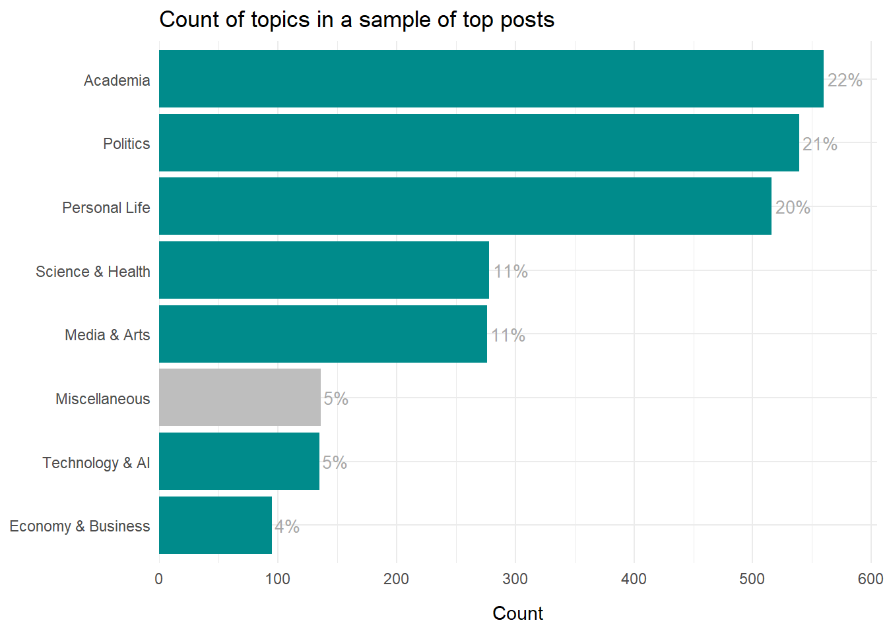
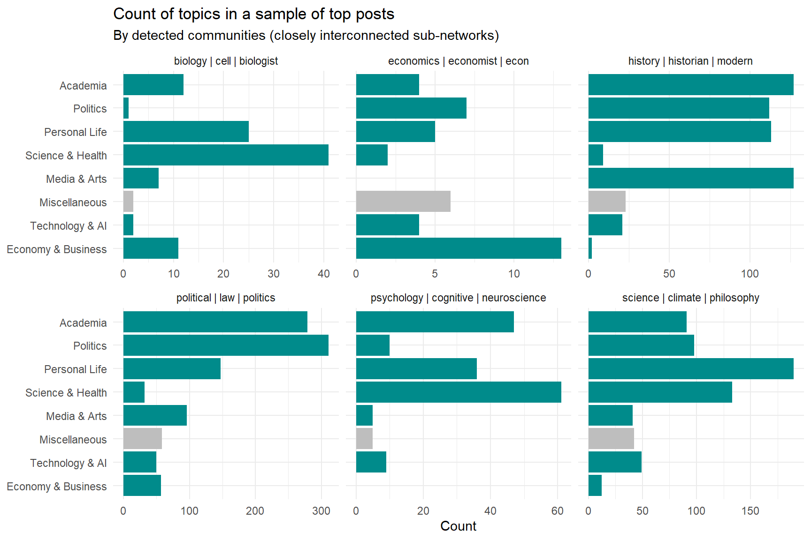
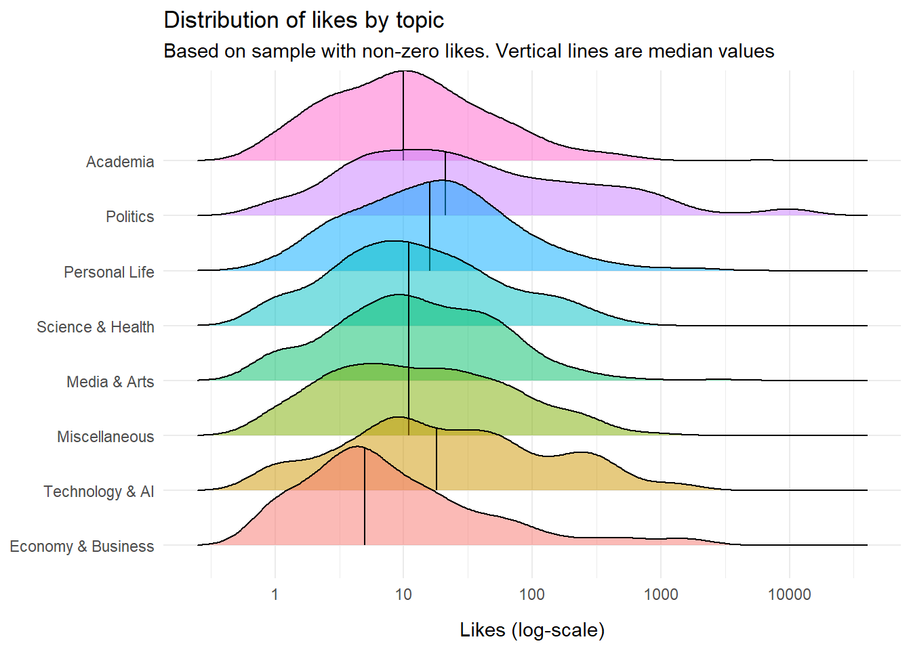
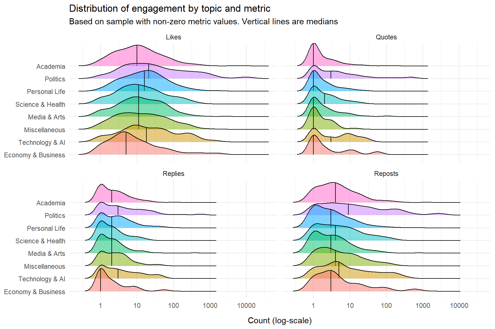
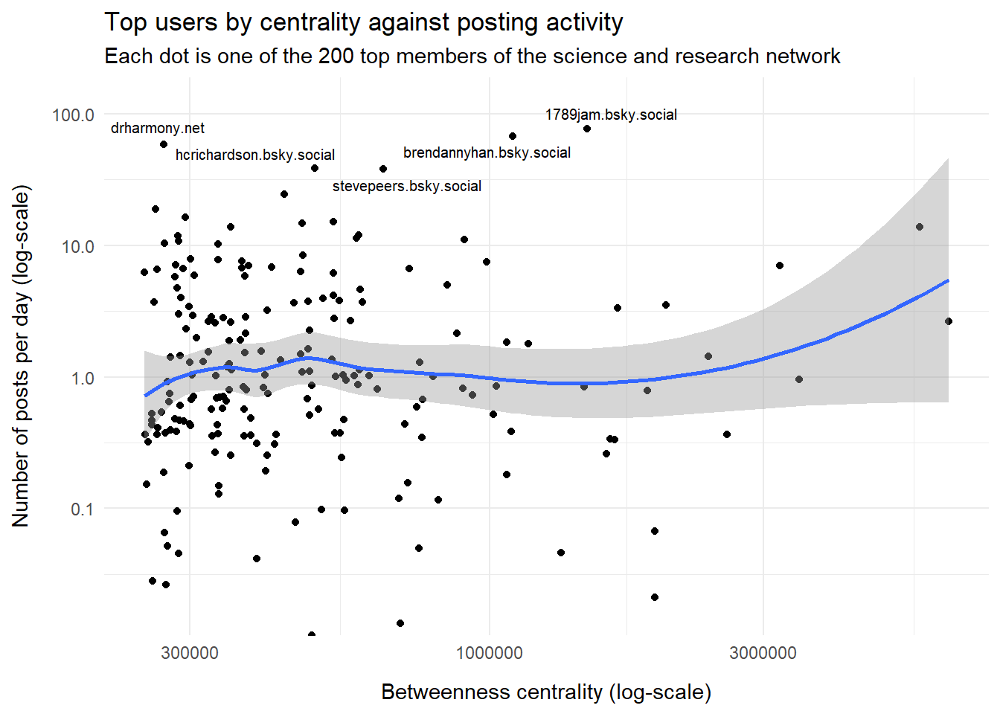

What are they posting?
Exploring top posts from top members of the science and research community on Bluesky
What is this?
This is an exploratory look at posts from the most influential members in our science and research network on Bluesky. In particular, we look at examples of posts generating an extraordinary amount of likes, but also statistics on the topic of posts and posting activity.
The data
We look at a total of 18427 posts from the top 200 influential members of the network, using the network update from 2025-05-09. We collected the posts at 2025-08-21.
Find the current list of influential members here, and a more detailed explanation of the ‘betweenness centrality’ metric we use to measure influence here.
First impression
Not surprisingly, a significant proportion of posts center around educational policy in the US which is in turbulent times at the moment. Also not surprisingly, the majority of network members in academia are critical of cuts in funding and research restrictions.
Still, most posts are about what you would expect from a community like this: Announcements, new positions, new papers, celebrations, links to interesting articles, observations on current events, etc.
But let’s look at examples of actual posts from the top members, so the reader can form their own impression. And what better place to start than with the most liked post in the whole data set.
And the winner is …
The most liked post, that is not a repost, reads like this:
“How bad slavery was” is worse. Much worse. Much worse than you think, much worse than you’re taught, much worse than museums depict. Worse.
This was posted on 2025-08-19 by user tlecaque.bsky.social, with the display name: Thomas Lecaque. That user has description:
Scholar of religious violence and apocalypticism from the Crusades to contemporary America, living and teaching on occupied Baxoje, Meskwaki and Sauk land. Joyful swearbear. He/him..
More winners
The top-20 original posts (not reposts) by number of likes is here:
Note that it is not close between the first and second place; that top one really went viral.
If we look at reposts, the top-20 (by number of likes) looks like this:
Clearly, the most liked posts and reposts are often about political issues, mostly in the US, often with a strong emotional tone of outrage or protest, not unlike a typical ‘letter to the editor’ in a Newspaper. Let’s investigate the topics posted about a bit further.
Most popular topics
Categorizing topics of social media posts is a perfect task for a large language model, aka a chatbot. We used a script to query Google’s ‘Gemini 2.5 flash’ model with a sample of posts, and get back descriptive topic labels. We did an random sample of 3,000 posts, to not exhaust the token limit. Again no reposts, as those can be hard to label without the original post.
By inspection, the labels that Gemini came up with, looked very reasonable. Below we provide a lot of examples so anyone can confirm (or reject) that impression.
First, counting the topics, we see that politics is indeed a popular subject in this subset of posts from influential network members:

We could also split those topics by community. The concept of a community is based on the algorithm we use to identify sub-networks. Communities are basically parts of the larger network that are particularly dense, i.e. interconnected. We use this algorithm to color the big visualization with communities.
In practice, communities reflect in large part different research fields; economist and psychologists tend to cluster in different communities, although of course there are also many interdisciplinary connections.
In the plot, each community is labeled with the most common words in members’ description.

There are some marked differences in what the communities like to talk about: Politics|law|politics has a lot of posts about (surprise!) Politics, while Psychology|cognitive|neuroscience likes Science & Health topics more.
Lots of examples
Lets take a closer look at examples of each topic, both to confirm that Gemini’s labels make sense, and to get a better feel for how actual posts look like. (Again, filtering out reposts.)
It’s oddly funny to browse the top posts; the interested reader is invited to join the fun. Notice that each topic contains a lot of sample posts, and you can use the filter function if you are interested in a particular topic or name.
A couple of casual observations I made (that will no doubt be different from yours):
- Of course, some topics overlap significantly. Academic and political commentary, for example, is inherently related.
- Emotions, like frustration, anger, social outrage, seem to attract attention, also in the science and research community.
- Humor, catchy remarks, and clever wording, are also frequent.
- Positive emotions, like joy, enthusiasm and happiness is also popular.
- Scientific findings and observations are popular too.
- Simply linking to an interesting article or news clip can sometimes also attract a lot of attention.
Note that these are just random thoughts, not a recipe for writing ‘killer’ posts. Bear in mind that we observe mostly popular posts from influential posters, and since we didn’t compare with something like the ‘average’ post or the full population of posts, we can’t really say if it is the choice of topic, or the tone of voice, or something else, that drives popularity.
Still, it may be interesting to examine the engagement between topics.
Engagement by topic
Below we have the distribution of likes split by post topic. The number of likes is highly right-skewed, so we use a log-scale, which also means we leave out posts with zero likes. All said and done, the plot below is based on a total of 2405 posts.

As expected, Politics is a particularly engaging topic, but so is Technology & AI, and Personal Life. Economy & Business – not so much.
In case the reader is wondering if other engagement metrics behave a lot differently (or just wants another colorful plot), we can split our plot to compare metrics. Below are the distributions of Likes, Quotes, Replies, and Reposts, by topic.

Politics comes out at top on all engagement metrics.
If you are not so wowed by colorful ridgeline plots (also known as a joy plots, believe it or not) here is a table with just the medians (again excluding zero value, to be consistent with the plot above):
Posting activity
Finally, let us turn the attention to the users whose posts we borrowed for this write-up. How does posting frequency look like, and might it drive their position in the network, i.e. centrality?
To that end, we aggregate the posts to user-level, that is, we examine the 200 users, whose posts we retrieved, in terms of centrality and posting activity. The way the Bluesky API works, is that you can at most retrieve 100 posts per user, and you always get the most recent posts. The date stamp enable us to calculate the average number of posts per day.

To me, it is a bit surprising to not see a correlation between centrality and posting activity. After all, it is common to get a few more followers after posting something popular.
But perhaps it is quality, not quantity, that drives the number of followers and centrality in the network up. Or we need more data; the picture could look quite different if we included many more users and not just top-200.
Finally, just to satisfy the curiosity, one closer look at one of the most prolific posters, how managed to get close to a hundred post per day?
The most frequent poster was user 1789jam.bsky.social, with the name: Judith A. Miller and description:
French/Global History, 1500-1850 at #Emory, Opera, Skiing, Gardening, Vote Blue…& Shoes! User #396,109 :) Ohio native bouncing between Atlanta, Paris, & Salt Lake City. Immune compromised, still wear a mask. Where’s the #skiing community
That user managed to reach the limit of 100 posts we can fetch in a little over a day. Mostly through reposts, though.
Final remark
Exploratory analyses like this can be done in a million ways. In fact, that is one of the reasons we have a reproducibility crisis in science; in that sense researchers can have too much freedom. For the same reason, it is extremely unlikely that I have done the data gathering, cleaning, wrangling, aggregation, and plotting in the best possible way.
So if you have any questions, suggestions, comments, feedback, praise or anger, connect and send me a message at Bluesky (of course).